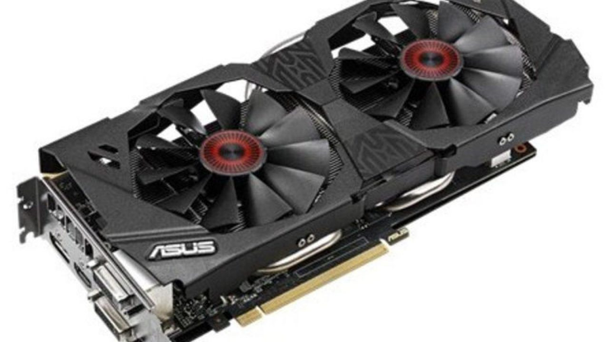
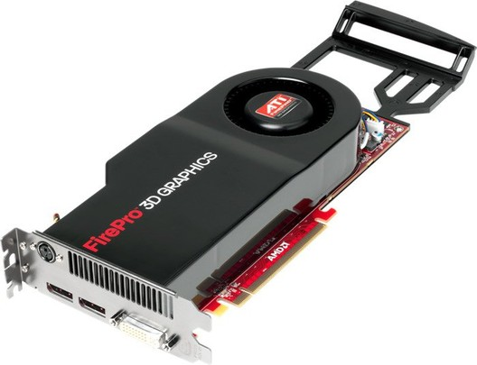
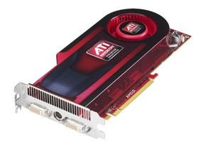
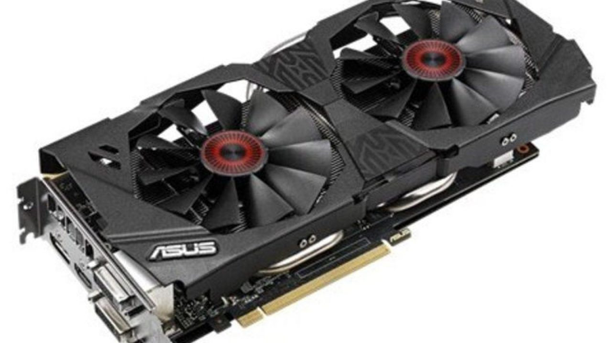
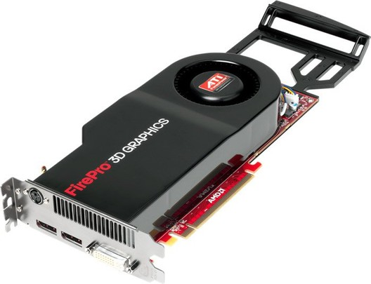
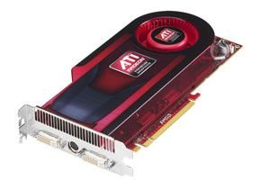

Paso 1: Limpia tu tarjeta gráfica
Con el paso del tiempo es normal que tanto los ventiladores como el radiador
se acaben llenando de polvo y suciedad. Durante la primera fase de vida de la
tarjeta no notaremos ningún problema, pero a largo plazo puede acabar reduciendo
la capacidad de refrigeración del sistema y elevar las temperaturas de trabajo.
Por ello es recomendable llevar a cabo, como mínimo, una limpieza cada año.
Paso 2: Cambia la pasta térmica de la tarjeta gráfica
Como ocurre con el procesador las tarjetas gráficas utilizan, en su mayoría,
pasta térmica como nexo de unión con el punto de contacto del radiador (una base de cobre, normalmente).
Dicha pasta acelera la transferencia de calor y permite, además, crear una base de contacto totalmente uniforme,
así que su importancia no admite discusión.
Debido al paso del tiempo se produce un efecto de degradación totalmente normal
(la pasta térmica tiene una vida útil limitada) que reduce la viscosidad y la capacidad de transferencia de calor
de la pasta térmica, hasta llegar a un punto en el que deja de ser efectiva. Si apuramos mucho puede que esa base
de contacto que se crea gracias a este elemento desaparezca de forma casi total, y que la transferencia de calor
al radiador no se produzca adecuadamente.
Paso 3: Cambia las almohadillas térmicas
Las almohadillas térmicas son pequeñas láminas de silicona con unos pocos milímetros
de grosor que hacen el mismo trabajo que la pasta térmica, pero se aplican a otros componentes
de la tarjeta gráfica que generan menos calor o que son menos sensibles a este.
Son deformables y conducen bien el calor, así que sirven para crear una base uniforme
de contacto entre esos componentes y el bloque del radiador. Esto permite que un diseño
de refrigeración determinado actúe no solo sobre la GPU, sino sobre casi todos los elementos de la tarjeta gráfica.
Paso 4: Actualiza los drivers
Los drivers de las tarjetas gráficas hacen algo más que mejorar el rendimiento.
A través de ellos se pueden introducir nuevas características, mejoras a nivel
de soporte con APIs avanzadas, soluciones para vulnerabilidades determinadas y correcciones
de errores que pueden llegar a comprometer la vida útil de la tarjeta gráfica. Si no actualizamos
los drivers de nuestra tarjeta nos estaremos perdiendo un montón de cosas.
Y listo!!!!
Información recolectada de techlandia.com y hardzone.es
 




